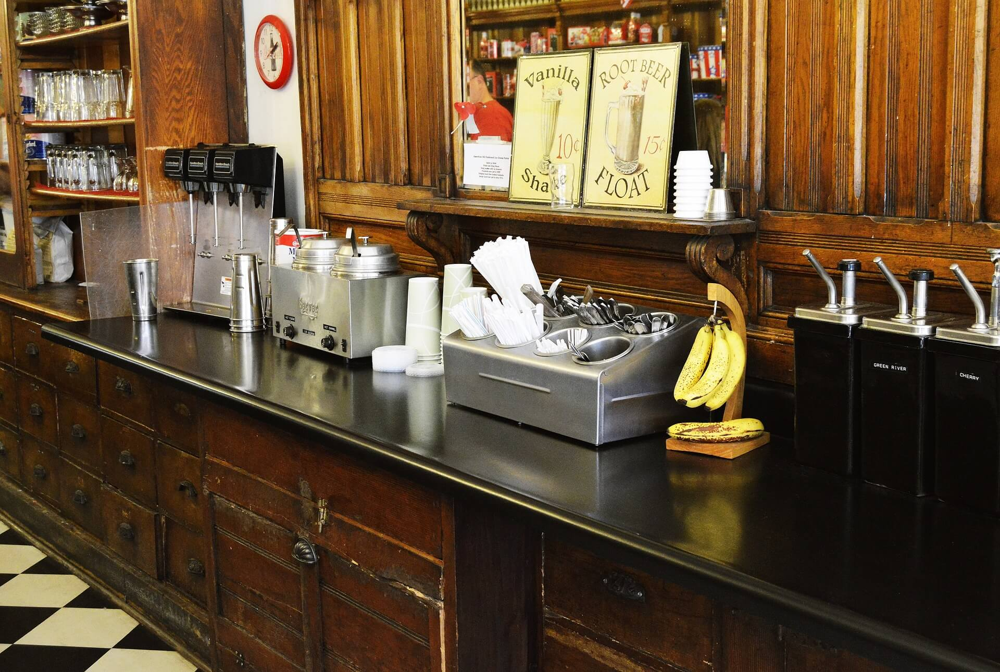
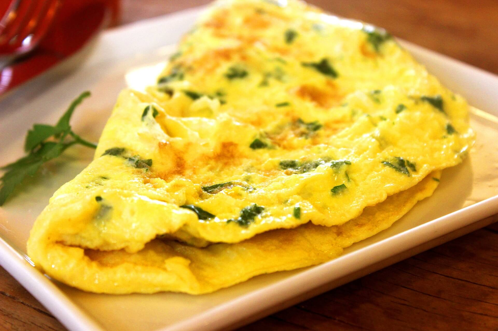

- 
健康を味わう、
家族で楽しむ
ニュース
コンセプト
トレーニング中でも美味しく健康的な食事が楽しめる家族で行ける食堂です。
店内はウッディでナチュラルな雰囲気で、シンプルで健康的な料理が並ぶカウンター席やテーブル席を用意。
お子様用のメニューもご用意しております。
メニュー
-

野菜たっぷりオムレツ
卵、トマト、玉ねぎ、ピーマンなどを使用したオムレツで、タンパク質やビタミン、ミネラルが豊富です。
カロリーは約250kcalです。 -

グリーンスムージー
スピンドルやケール、バナナ、りんごなどを ミキサーにかけたもので、ビタミンやミネラル、食物繊維が豊富です。
カロリーは約150kcalです。
トレーニング前に食べることで、
エネルギー補給や栄養補給ができるメニューです。
-
グリルチキン
aaa
-

豆腐のチーズケーキ
aaa
店舗情報
- 店名
- The Active Kitchen
- 住所
- 〒171-0022
東京都豊島区南池袋２丁目３ - TEL
- 03-0000-0000
- info@active-kitchen.jp
- 営業時間
- 11:00～19:30
- 定休日
-
毎週火曜日
トレーニング前に食べることで、
エネルギー補給や栄養補給ができるメニューです。